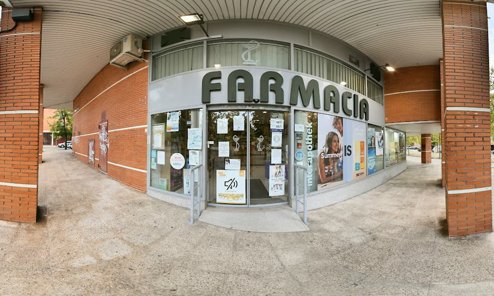

Si no lo tenemos, te lo conseguimos
¿Tu medicamento no está en la estantería? Lo encargamos y en poco tiempo lo tienes en la farmacia. Nadie se va sin su tratamiento.
Lunes a viernes 9:00–21:00 · Sábados 10:00–20:00
Consejo cercano, tus medicamentos cuando los necesitas y un equipo que te conoce por tu nombre. En la Avenida del Parque de Palomeras Bajas, 23.
4,8Qué hacemos por ti
¿Tu medicamento no está en la estantería? Lo encargamos y en poco tiempo lo tienes en la farmacia. Nadie se va sin su tratamiento.
Te explicamos cómo tomar tu medicación y resolvemos tus dudas sin prisas.
Primeras marcas de cuidado de la piel, solares, higiene e infantil.
Acceso adaptado para sillas de ruedas y pago con tarjeta o con el móvil.

Bajo los soportales, con rampa y pasamanos en la entrada. A dos pasos del Centro Cultural Paco Rabal.
Lo que dicen nuestros vecinos
Pasé por casualidad para ver si tenían un medicamento y desde entonces se ha convertido en mi farmacia de referencia. El trato de todo el personal es de 10. Son unas chicas encantadoras y te atienden de maravilla.
Siempre que vengo me voy con ganas de volver. Las chicas son encantadoras, siempre te atienden con una sonrisa y buscan soluciones para todo lo que pueda pasarte. No vivo en este barrio pero me desplazaría a posta solo por la buena atención recibida.
Voy frecuentemente y el trato es inmejorable por parte de todos los empleados. Si no tienen algún medicamento te lo piden y enseguida lo tienen en la farmacia. Te asesoran en lo que te haga falta. Es una maravilla ☺️
¡Muy agradecido por el trato recibido por el farmacéutico que me atendió! Da gusto dar con profesionales que su pasión es ayudar y más en estos gremios.
Son superamables y simpáticas, sobre todo la chica morena de pelo largo que las pocas veces que me ha atendido, me ha ayudado a resolver todas mis dudas. Sin duda, será mi farmacia de referencia. :)
Nadie sale sin su medicación. Y amables y atentos.
Atención de 1000 ⭐️ siempre atentas y resolutivas. Gracias
Horario
| Lunes | 9:00 – 21:00 |
|---|---|
| Martes | 9:00 – 21:00 |
| Miércoles | 9:00 – 21:00 |
| Jueves | 9:00 – 21:00 |
| Viernes | 9:00 – 21:00 |
| Sábado | 10:00 – 20:00 |
| Domingo | Cerrado |
Horarios de festivos y guardias: llámanos para confirmarlo.